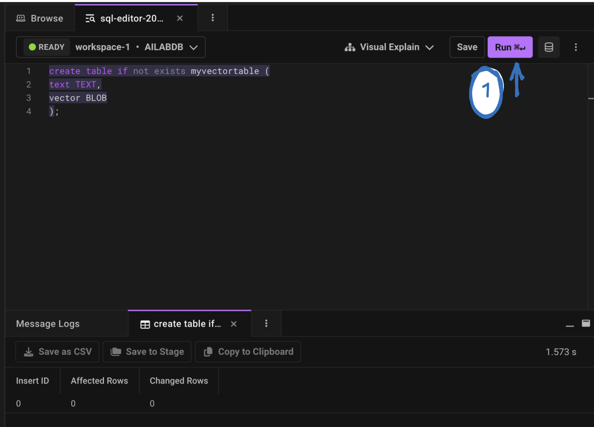

Task 4: Embeddings and Vector Database
Embeddings
Introduction
- Vector databases are specialized databases designed to store content like PDFs, blogs, Word documents, images, audio files, and videos as embedding vectors. This enables semantic-based retrieval, meaning the database can understand the meaning and context of the stored data, allowing for more accurate and relevant search results beyond simple keyword matching.
{kind=link}
- In the process of a large language model, embedding is generally the first step to convert discrete tokens (like words or subwords) into dense vector representations, which will allow the rest of the network to do the math necessary to predict the next word. Embeddings and vector databases are essential if you are building any kind of an AI product.
{kind=link}
Embeddings are basically data which are converted into an array of numbers called vectors that contain a pattern of relationships and can be used for similarity search.
{kind=link}
{kind=link}
Let's explain this concept using a 2D graph. In this graph, words like "Webex" and "collaboration" are often used in similar contexts, so their embeddings essentially vector representations are positioned close to each other (as shown in green in the below image ). These vectors are numerical arrays that computers can easily interpret.
The advantage of using vectors is that we can find similar items by calculating the distances between their vectors, a process known as nearest neighbor search. However, simply storing these embeddings isn't enough. Performing queries across thousands of vectors can be incredibly slow. To overcome this, the vectors need to be indexed in the vector database. Indexing organizes the vectors in a way that speeds up the search process, allowing for quicker and more efficient retrieval of similar items.
Note: In reality vectors can have hundred of dimensions
{kind=link}
Similarly, images are also broken into vectors, which are arrays of numbers that machines can process. Once these embeddings (both for words and images) are generated, they are stored in a specialized database known as a vector database.
{kind=link}
There are numerous embedding models available, such as Google's Word2Vec, CLIP (Contrastive Language–Image Pretraining), and even those provided by OpenAI, which offer excellent capabilities for generating embeddings. However, the challenge is that these models don't include tools for storing and managing those embeddings. This is where vector databases become essential.
Note
In this lab session, we will be using OpenAI embeddings. More info can be found here
Vector Databases
Introduction
Around 80% of the data we encounter is unstructured, including social media posts, images, and videos. This type of data doesn’t easily fit into traditional relational databases, which is where vector databases come into play.
{kind=link}
{kind=link}
Understanding the workings of Embeddings and Vector Databases
Introduction
{kind=link}
The above image illustrates a high-level overview of how embeddings and vector databases will work together:
-
Questions/Input Data: The process begins with a set of questions or inputs that need to be understood or processed.
-
Create Embeddings: These questions or inputs are then converted into embeddings.
-
Embeddings: Once the embeddings are generated, they are stored temporarily and prepared for the next step. These embeddings are essentially numeric representations that contain the contextual information of the original input.
-
Vector Database (Vector DB): The generated embeddings are stored in a vector database(e.g Singlestore). This database is optimized for searching and retrieving embeddings quickly, enabling faster queries when comparing vectors to find similar items.
Note
There are many vector databases, such as Chroma, Faiss, Pinecone e.t.c. However, we are using SingleStore for its ease of use and to help you better understand how embeddings are created.
Important
If you’ve already obtained the token in previous steps/section, you can skip this step. The OpenAI APi key should be in the .txt file you downloaded at the beginning of the lab.
-
First, create an account from the OpenAI official website.
-
Create a new project API key by browsing to API Keys web page. Select Create new secret key. The API key is automatically generated. Save the APi Key as we will be using it in the later steps .

Note
We will use the OpenAI key to generate embeddings.More information about OPENAI embeddings can be found at the following link
- Within your existing Google Colab notebook navigate to the new “Secrets” section in the sidebar.

-
Click on “Add a new secret.” Enter the name example: OPENAI_API_KEY and value of the secret(the API key in your .txt file). Note: The name is permanent once set.
-
The list of secrets is global across all your notebooks.
-
Use the “Notebook access” toggle to grant or revoke access to a secret for each notebook.

- Once done lets start by installing all the necessary packages
!pip install python-dotenv langchain-openai chromadb langchain_community langchain_chroma
- Import all the relevant libraries
1 2 3 | |
- We’ll initialize the OpenAI Embeddings model specifically text-embedding-3-large. This model will convert our text into vectors so we can do smart things like search, match, or retrieve context.
1 2 3 | |
1 2 3 | |
Important
At this point, we’ve successfully used OpenAI’s text-embedding-3-large model to convert our input text into a numerical embedding.This embedding is just a list of floating-point numbers that represent the meaning of the sentence in a way that machines can understand. These vectors are what power many GenAI use cases, like searching through documents, matching similar content, or retrieving the most relevant context for a question.
🧠 Storing and Retrieving Embeddings with ChromaDB
- Now, we’ll use ChromaDB to store the embeddings we just created and later retrieve information based on similarity.
Note
ChromaDB is an open-source vector database that lets us store text as high-dimensional vectors (embeddings) and run similarity searches over them. This is a key building block in many GenAI applications such as retrieval-augmented generation (RAG), semantic search, and intelligent assistants.
One of the beauties of using ChromaDB is that it allows you to build and populate your vector database at runtime, no need to pre-create schemas, tables, or indexes like in traditional databases.
- Before storing the data in Chroma, we wrap our input text inside a document object, because "Chroma.from_documents()" expects its input to be a list of document objects and not plain strings.
1 2 | |
- Now that we’ve converted our text into a Document, the next step is to store it in a vector database using ChromaDB.
Note
Langchain have released a new library for chroma you can also use from langchain_chroma import Chroma
1 2 3 | |
Note
This is a key part of any GenAI or RAG workflow we need a place to store text as vectors so we can later compare new user queries against it and retrieve relevant context.
- Now that our text is stored in ChromaDB as vectors, we can run similarity searches against it.
1 2 3 4 | |
Important
At this point, we’ve successfully built a simple yet powerful vector-based retrieval system using OpenAI embeddings(cost associated to OpenAI) and ChromaDB. We took a plain sentence, converted it into a high-dimensional embedding, stored it in a vector database, and then queried that database using natural language. Instead of relying on exact keywords, the system was able to understand the meaning of the question and retrieve the most relevant piece of text. This is the core building block of many GenAI workflows, with just a few lines of code, we've created a smart way to store and retrieve knowledge based on context and meaning.
So far, we’ve used OpenAI embeddings, which are powerful but they come with API costs. The good news? There are many excellent open source alternatives that allow you to generate embeddings at no cost, such as Hugging Face.
Note
If you've already downloaded the .txt file provided for this lab, it contains your Hugging Face API key.If you're unsure how to retrieve or use it, please refer to the Pre-requisites section at the start of this lab.
- Open the Google Colab notebook and navigate to the new “Secrets” section in the sidebar by clicking the "key icon”
-
Click on “Add a new secret.” Enter the name example: HF_TOKEN and value of the secret. Note: The name is permanent once set.
-
The list of secrets is global across all your notebooks.
-
Use the “Notebook access” toggle to grant or revoke access to a secret for each notebook.

- We will start by installing python packages
1 | |
- Lets import the required modules
1 2 3 | |
- lets use emebddings from Huggingface
1 2 | |
- Lets convert our text into embeddings
1 2 3 | |
In this step, we’ll replicate what we just did programmatically but this time using Postman to manually send a request to OpenAI’s embedding API. We’ll send a piece of text and receive a vector representation (an embedding) in return. If you haven't installed Postman on your machine yet, you can download it from the following link
Note
If you are using the provided machines, Postman will already be pre-installed.
We will use embedding APIs to create an embedding vector that represents our input text. More information about OPENAI embeddings can be found at the following link
The POST request we will be using:
https://api.openai.com/v1/embeddings
{kind=link}
- Click on the Headers tab and enter the Following creds
Authorization: Bearer <replace with your openAi API key>
Content-Type : application/json
Note
Ensure there is a space between "Bearer" and your OpenAI API key.
{kind=link}
In this lab, we will be using the text-embedding-ada-002 model, but feel free to use any other embedding model of your choice.
{kind=link}
Note
In the input field below, you can also enter your own text if you prefer.
- In Postman, click on the "Body" tab, select RAW and enter the following information, and then press Send.
{
"input": "What is WebexOne 2024? WebexOne is an annual in-person and virtual event that takes place over four days. It’s an event focused on AI collaboration and customer experience, and it features a range of activities such as insightful breakout sessions, technical training courses, hands-on labs, inspiring keynotes, epic entertainment, a solutions showcase and expo, customer awards, meet the experts, 1:1 executive meetings, a partner program, and more!",
"model": "text-embedding-ada-002"
}
{kind=link}
- You will receive a 200 OK message, confirming success. You'll notice that our text has been converted into embeddings (vectors/floating point numbers). In the upcoming steps, we will learn how to manually save this information in a vector database.
{kind=link}
Note
Text embedding models convert text into numerical data (embeddings) that represent the meaning of the text.
We have a variety of databases available. In the upcoming step, let's demonstrate how to use SingleStore as a vector database and save our embeddings there.
Note
This MANUAL step is simply to illustrate how embeddings are stored in vector databases.
We will create a Free account on SingleStore since it provides some credits to set up a trial account.
Important
If you encounter an error while inserting data, try deleting the table and running the insert again.
{kind=link}
- I’m choosing to create an account using Google, but feel free to use any other method that works for you.
{kind=link}
- Select Continue
{kind=link}
{kind=link}
{kind=link}
{kind=link}
{kind=link}
{kind=link}
- Click on Create New -> Deployment
{kind=link}
- Give your workspace a name, keep all other settings at their default, and click "Next."
{kind=link}
- Then, leave everything as is and click on "Create Workspace."
{kind=link}
Note
Workspace creation can take up to 5 minutes.
- Now we can create a database
{kind=link}
Note
Database creation can take up to 5 minutes.
{kind=link}
- Click on Database tab and click on the databse name you created earlier.
{kind=link}
- Navigate to Develop > Data Studio. Open the SQL Editor.
{kind=link}
- Be sure to select your workspace and database.
{kind=link}
- Run this SQL command to create a table called myvectortable - Press Run
Note
You can also name the table as you prefer. Please note: If your lab remains inactive for 20 minutes, the SingleStore database will automatically pause. To resume, go back to the homepage, click 'Resume,' and your workspace will be ready again within a few minutes."
create table if not exists myvectortable (
text TEXT,
vector BLOB
);
{kind=link}

- You can navigate to the Schema Explorer VIEW on the right, and verify that the table has been created.
{kind=link}
Important
OR
- Navigate to the Deployments tab, click on Databases, select your database, and verify that the table has been created.
{kind=link}
Note
The table name we created earlier may differ from the one shown in the image above. In our case, we named the table myvectortable.
-
Let's copy the embeddings we generated earlier using Postman so that we can insert them into our database.
-
To proceed, copy the input text (from the input field only) and all the values from the 'embedding' field (in reponse), including the square brackets [ ], as shown in the image. These will be used for insertion into our database.
{kind=link}
- Let's head back to our SQL editor and insert the values into our database using the below SQL command. Once done press "Run"
Important
You can reuse the same SQL editor block, remove the previous command, and run the following one.
insert into myvectortable (text ,vector) values ("your_input_text", JSON_ARRAY_PACK("your_embeddings"))
Note
In this query:
- Replace "your_input_text" with the input values from Postman.
- Replace "your_embeddings" with the embeddings you copied earlier, including the square brackets [ ].
insert into myvectortable (text ,vector) values ("What is WebexOne 2024? WebexOne is an annual in-person and virtual event that takes place over four days. It’s an event focused on AI collaboration and customer experience, and it features a range of activities such as insightful breakout sessions, technical training courses, hands-on labs, inspiring keynotes, epic entertainment, a solutions showcase and expo, customer awards, meet the experts, 1:1 executive meetings, a partner program, and more!", JSON_ARRAY_PACK("[
-0.0042485874,
-0.02296605,
0.011213377,
0.01114761,
-0.027280405,
0.0023528363,
-0.004350527,
0.0043768343,
-0.00068562734,
-0.011660597,
0.010397859,
0.018730614,
-0.0158763,
-0.013469206,
0.0026997605,
-0.00003768792,
0.014850326,
-0.03183152,
0.0026175508,
-0.0459321,
-0.0055803815,
-0.008247258,
-0.011713211,
0.0006169824,
-0.017112732,
-0.002885554,
-0.004113764,
-0.01348236,
........
]"))
- After running the above command, you will see that our table now contains both the input text and the corresponding embeddings. Click on Sample Data
{kind=link}
- Let's now explore on how to retrive values from Vector Database
{kind=link}
- Searching the vector database is quite simple. Example: we want to find information related to WebexOne. To do this, we'll create embeddings for our query, "Is WebexOne an annual event?" and then search the vector database to find matches against the existing embeddings.
1 | |
- Let's open Postman and create an embedding for our question now. Be sure to click on "Send."
Note
Make sure you use the same embedding techniques that we used earlier.
{kind=link}
- Let's head over to the SQL editor and run a query for our search.
{kind=link}
Note
You can reuse the same SQL editor block, remove the previous command, and run the following one.
select text,dot_product(vector,JSON_ARRAY_PACK("your_embeddings")) as score
from myvectortable
order by score desc
limit 5;
Note
In this query:
- Replace "your_embeddings" with the embeddings you copied earlier, including the square brackets [ ].
Note: The below code is just an example, please copy the embeddings from your Postman.
select text,dot_product(vector,JSON_ARRAY_PACK("[
-0.0015118581,
-0.021267666,
0.023597047,
-0.0072638104,
-0.02286653,
0.005909599,
-0.026119394,
-0.010268575,
0.0052169873,
-0.009551842,
0.024065679,
0.020178782,
0.015464887,
0.016815653,
-0.016333235,
-0.0006641838,
0.018069934,
-0.010564916,
0.007911626,
-0.026367495,
-0.0019417254,
-0.005547787,
-0.012604848,
0.0003715036,
-0.013962504,
0.011729606,
-0.00078737224,
-0.011881223,
0.007815143,
0.009992908,
0.020316616,
-0.0032580325,
-0.0066401153,
0.0097310245,
-0.0028652078,
-0.008145943,
-0.0074843434,
........
]")) as score
from myvectortable
order by score desc
limit 5;
{kind=link}
Note: You’ll be able to see the success of the vector database—higher scores indicate better matches for the answer.
In summary, vector databases allow LLMs to have long-term memory. In this section, we explored how to use embeddings and vector databases by generating embeddings with the OpenAI API through Postman. After setting up a free SingleStore account, embeddings were stored in a vector database. The process included creating an embedding for a query, searching the database, and confirming that it effectively retrieved relevant information. This demonstrated how vector databases can efficiently manage and query embeddings, making it easier to find relevant information based on the data stored.
👉 This concludes the task. Click the "Context Windows and Retrieval Augmented Generation (RAG) " Task on the left.